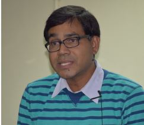

Dr. MUKUNDA DEV BEHERA

Associate Professor
Centre for Oceans, Rivers, Atmosphere and Land Sciences (CORAL)
Indian Institute of Technology (IIT), Kharagpur
Research Interest:
Geo-informatics,
Land Cover Dynamics,
Spatial Modeling,
Ecology and Climate
About
Dr. Mukunda Dev Behera is Associate Professor at Centre for Oceans, Rivers, Atmosphere and Land Sciences (CORAL), Indian Institute of Technology (IIT) Kharagpur. He teaches in the area of Geo-informatics of Ecology, Land Cover Dynamics. He received his BSc and MSc degrees in Environmental Biology from Berhampur University, India. He obtained a PhD in Botany from Indian Institute of Remote Sensing, ISRO India. Dr. Behera received Professional Master Degree in Geo-Information-GDTA from University of Paris, France. He was a principal scientific officer, Scientist engineer at INCA, ISRO. He joined IIT Kharagpur where he has been teaching since 2007. He is a Erasmus Mundus Visiting Scholar- Geo-information Science and Earth Observation for Environmental Modeling (GEM) Program (2014-15) ITC, University of Twente, Netherlands; Visiting Fellow at NTSG (June-July 2009) University of Montana, USA; Visiting Fellow at Meteorology Dept. and ESSC (June-Sept. 2002) University of Reading, UK . He received Fellowship from French Ministry of External Affairs, GEM Visiting Scholar Fellowship to teach and conduct research on Geo-informatics. Dr. Behera’s current research interests include Geo-informatics of Ecology, Land Cover Dynamics, Biodiversity and Climate.
Academic
Educational Qualification (Master and PhD degree or equivalent)
- European Professional Post-Graduate Course in Geo-information: Diploma delivered by GDTA (in collaboration with the University of Paris VI, France; the University of Technology of Warsaw, Poland; and the faculty of sciences of the University of Lisbon, Portugal) and Master Degree by the University of Paris VI, France October 2002.
Research focused on data use from the Lidar In-space Technology Experiment (LITE), which flew on the space shuttle in 1994, to estimate the fraction of clouds that contain supercooled liquid water over the latitude range ±60o. Around 20% of clouds between -10oC and -15oC were found to contain liquid water, falling with temperature to essentially zero below -35oC. Dissertation Title: “LITE lidar for global distribution of supercooled liquid water cloud study” [at Univ. of Reading, UK June-September 2002] - Doctor of Philosophy (PhD) Degree in Botany - Gurukula Kangri University, Haridwar, India May 2001 Research focused on adopting a ‘three-tier modeling approach’ of (i) utilization of geospatial tools, (ii) limited field survey and (iii) landscape analysis approaches; for rapid assessment of biological richness in Subansiri district of Eastern Himalaya. This study has wider conservation implications. Thesis Title: “Biodiversity characterization at landscape level in Subansiri District, Arunachal Pradesh using remote Sensing and GIS” [Research Centre: Indian Institute of Remote Sensing, IIRS (Indian Space Research Organization, ISRO), DehraDun]
- Master of Philosophy (MPhil) Degree in Environment Management -Vikram University, Ujjain, Madhya Pradesh, India
Research focused on assessment of physical, chemical and biological environments of a steel tubes manufacturing company (located in Dewas, Madhya Pradesh, India) in order to assess and predict their short and long term impacts on the surrounding environment, society and life, in 3-months during 1996. Dissertation Title: “Rapid Environmental Impact Assessment (EIA) of Steel Tubes of India Ltd.” - Master of Science (MSc) Degree in Botany (Specialization: Environmental Biology) –Khallikote Autonomous College, Berhampur University, Berhampur, Ganjam, India August 1993
Research focused on a manipulation experiment to study germination, growth and vigor of mustard plant in different proportions of coal fly ash mixed with soil, to understand their performance in comparison to compost manure and a control composition; for possible utilization as an agro-chemical at large scale. Dissertation Title: “Utilization of coal fly ash as an Agrochemical” - Bachelor of Science (BSc) Degree in Natural Sciences (Honors Subject: Botany) – Bhadrak College, Utkal University, Bhubaneswar, Odisha, India
- European Professional Post-Graduate Course in Geo-information: Diploma delivered by GDTA (in collaboration with the University of Paris VI, France; the University of Technology of Warsaw, Poland; and the faculty of sciences of the University of Lisbon, Portugal) and Master Degree by the University of Paris VI, France October 2002.
Employment and Affiliation
Appointments
- Associate Professor at Centre for Oceans, Rivers, Atmosphere and Land Sciences (CORAL), IIT Kharagpur, Kharagpur, West Bengal, India, Since March 2014
- Assistant Professor at CORAL, IIT Kharagpur, West Bengal, India Sept. 2008-February 2014
- Assistant Professor at Rural Development Centre, IIT Kharagpur, India Sept. 2007-August 2008
- Scientist/ Engineer-SD at Regional Remote Sensing Service Centre, RRSSC (Indian Space Research Organization, ISRO), IIT Kharagpur Campus, West Bengal, India Nov., 2002-August 2007
- Principal Scientific Officer at INCA Informatics Pvt. Ltd., Delhi, India Nov., 2000-January 2002
- Junior and Senior Research Fellow at Indian Institute of Remote Sensing, IIRS (Indian Space Research Organization, ISRO), DehraDun, India April 1997-October 2000
- Junior Research Fellow at National Environmental Engineering Research Institute (Council of Scientific and Industrial Research, CSIR-NEERI), Nagpur, Madhya Pradesh, India March 1997
- Senior Project Fellow at School of Studies in Botany, Vikram University, Ujjain, India August 1996-February 1997
-
Professional Affiliations
- Visiting Professor at Japan Agency for Marine-Earth Science and Technology (JAMSTEC) Yokohama Institute for the purpose of (i) research collaboration and to deliver oral presentation about my research, (ii) imparting technical advice based on my experiences regarding the terrestrial biospheric observations in India for better assessment of regional carbon budgets, and (iii) to contribute to the REgional Carbon Cycle Assessment and Processes-2 (RECCAP2) 2019-2021: Contact Dr. Prabir Patra and Dr. Swadhin Behera. 03-10th August 2019
- Visiting Professor at the School of geography and Environment in University of Southampton, UK [Involved in Research Discussion (on Establishment of CEOS Land product validation supersites in India, Development of a Dynamic vegetation model for India, and Research collaboration on Potential application of Sentinel data) and Participation in the field campaign at Wutham Woods, Oxford for validating European Space Agency’s satellite derived land products: Contact- Prof. Jadu Dash 30 June- 17 July 2018
- Associate Professor at School of Water Resources and Management (SWR), IIT Kharagpur, Kharagpur, West Bengal, India [Involved in Teaching & collaborative Research] Since August 2008
- Adjunct Faculty at the School of Earth, Ocean and Climate Science in IIT Bhubaneswar, Arugul, Odisha, India [Involved in Teaching and collaborative Research] During 2014-15; 2017-18
- Adjunct Faculty at the School of Biodiversity & Conservation of Natural Resources in Central University of Orissa, Koraput, India [Involved in Teaching & collaborative Research] During 2016-17
- Visiting Scholar at ‘Faculty of Geo-Information Science and Earth Observation’ in University of Twente, Enschede, The Netherlands [Involved in teaching in the MSc program on Geo-Information Science for Environmental Modeling and Management conducted in the Erasmus Mundus Program of the European Union: Contact- Prof. Andrew Skidmore] June 2014
- Visiting Fellow at the International Centre for Integrated Mountain Development (ICIMOD), Kathmandu, Nepal [Involved in collaborative Research discussion and joint publication: Contact- Dr. Eklabya Sharma]
- Visiting Professor at the Institute for Environmental Planning at the Gottfried Wilhelm Leibniz University, Hannover, Germany [Involved in discussion for scientific collaboration and Visit to the Botanical Garden: Contact- PD. Dr. Sylvia Herrmann] 08-10 September 2011
- Visiting Fellow at the Environmental Change Institute at the School of Geography and the Environment’ in University of Oxford, UK [Involved in collaborative Research discussion and Visit to the Carbon Flux Tower at Wutham Woods: Contact- Prof. Yadvinder Malhi] 29 August- 04 Sept 2011
- Visiting Fellow at ‘Numerical Terradynamics Simulation Group’ in University of Montana, Missoula, USA [Involved in collaborative Research and use of Biome-BGC, a dynamic global vegetation dynamics model for plant productivity assessment: Contact- Prof. Steven S Running] June-July 2009
- Visiting Fellow at Department of Meteorology and Environmental Systems Science Centre (ESSC) at the University of Reading, UK [Involved in collaborative Research LiDAR data utilization for cloud and vegetation studies respectively: Contact: Prof. A Illingworth and Prof. D Mason] June-Sep 2002
-
Competitive Fellowship and Award
- Erasmus Mundus Visiting Scholar Fellowship at ‘Faculty of Geo-Information Science and Earth Observation’ in University of Twente, Enscheda, The Netherlands [Involved in teaching in the MSc program on Geo-Information Science for Environmental Modeling and Management (June 2014)
- Fellowship from French Ministry of External Affairs (EGIDE) to pursue European Professional Post-Graduate Course in Geo-information at GDTA (University of Paris VI), Toulouse, France (2002).
- Council of Scientific and Industrial Research (CSIR-NET) JRF and SRF to Pursue Doctoral Degree
- 2-Time Finalist for the Indian National Science Academy (INSA) YS Award during 2002 and 2004
- Qualified at Indian Civil Services (Preliminary) Examinations in the very first attempt in 1994
- Odisha State level Merit Scholarships during Class IV to VII standard
-
Journal Editor and Review
- Special Issue: Tropical Ecology Jr. (Springer Nature) on Ecosystem Functioning and Remote Sensing, March 2020. This special issue presents 15 papers contributed by more than 25 authors from India and neighboring countries those discuss wide-ranging aspects of ecological processes, and their pattern and change with/-out the use of remote sensing. Majority of these contributions are based on presentations made at the 2nd International Workshop on Biodiversity and Climate Change (BDCC-2018) held during 24–27 February 2018 at the Indian Institute of Technology Kharagpur, India. India is well-studied in terms of various ecological processes, and their pattern and change; and contributes to the scientific understanding through experiences (March 2020).
- Special Issue: Environmental Monitoring and Assessment Jr. (Springer) on Terrestrial and Ocean Dynamics – India Perspective, December 2019. This special issue presents 29 papers contributed by more than 100 authors from India those discuss wide-ranging aspects of terrestrial and ocean dynamics, and climate change with/-out the use of remote sensing. These contributions are based on presentations made at the 2nd International Workshop on Biodiversity and Climate Change (BDCC-2018) held during 24–27 February 2018 at the Indian Institute of Technology Kharagpur, India. India is well-studied in terms of various terrestrial and oceanic processes; and contributes to the scientific understanding through experiences (December 2019).
- Special Issue: Biodiversity and Conservation Jr. (Springer) on Biodiversity and Climate Change – Indian Perspectives, July 2019. This special issue presents 25 papers contributed by 90 authors from India those discuss wide-ranging aspects of biodiversity and climate change. These contributions are based on presentations made at the 2nd International Workshop on Biodiversity and Climate Change (BDCC-2018) held on 24–27 February 2018 at the Indian Institute of Technology Kharagpur, India. India is no less affected through this feedback mechanism of climate change and had shown its cause and effect association through these studies (July 2019).
- Special Issue: Proceedings of the National Academy of Sciences, India. Section A. Physical Sciences Jr. (Springer) on Remote Sensing - Sensors, Techniques and Applications. This special issue brings out some sensors and their operational application themes such as agriculture, forestry, biodiversity, ground water targeting, water resources, land use, urban sprawl, geology, environment, coastal zone, marine resources, snow and glacier, disaster monitoring and mitigation, infrastructure development etc. in which India has extensively used remote sensing data. [https://link.springer.com/journal/40010/87/4/page/1] December, 2017
- Special Issue: Biodiversity and Conservation Jr. (Springer) on Climate Change and Biodiversity. The special issue accommodates 11 papers that document studies on the Indian subcontinent through experiments, measurements, and modeling, with or without geo-information technology, to enhance our understanding of the effects of climate change that may have on biodiversity of the Indian region. The papers included here have been selected from those presented at the 1st International Workshop on Bio-Diversity and Climate Change (BDCC-2010) held in the Indian Institute of Technology (IIT), Kharagpur, India, on 19-22 December 2010. [http://link.springer.com/journal/10531/21/5/page/1] May, 2012
- Special Section: Current Science (India) - Forest Biodiversity, Climate and Geo-Informatics, 2012. This special section accommodated 6 manuscripts selected from those presented at the 1st International Workshop on Bio-Diversity and Climate Change (BDCC-2010) held in the Indian Institute of Technology (IIT), Kharagpur, India, on 19-22 December 2010. Climate has a significant influence on the distribution, structure and ecology of forests and their biodiversity content and vice versa; and these studies are increasingly benefitted from modern tools such as remote sensing, GIS, GPS and Species Distribution Model (SDM). [http://www.currentscience.ac.in/php/spl.php?splid=5] May, 2012
- Scientific Reports - Nature Publishing Group, Forest Ecology and Management, Bio-systems Engineering, Ambio, Environment Monitoring and Assessment, Journal of Earth System Science, Journal of Indian Society of Remote Sensing, Canadian Journal of Remote Sensing, Current Science, Remote Sensing, Theoretical and Applied Climatology, Journal of Advances in Space Research, Small Scale Forestry, Journal of Tropical Forest Science, Journal of Mountain Science, Journal of Forestry Research, Science of Total Environment, Journal of Environment Management, PNAS India: A-Physical Science, PNAS India: B-Biological Science, Biodiversity and Conservation, Ecological Informatics, Ecology and Evolution
Guest Editor - Peer Reviewed Journal
Peer-reviewing of Journal Manuscript
Publications
- Identification of potential ecotourism sites in West District, Sikkim using geospatial tools S Kumari, MD Behera, HR Tewari Tropical Ecology 51 (1), 75-85
- Modelling and analyzing the watershed dynamics using Cellular Automata (CA)–Markov model–A geo-information based approach MD Behera, SN Borate, SN Panda, PR Behera, PS Roy Journal of Earth System Science 121 (4), 1011-1024
- Estimate of the global distribution of stratiform supercooled liquid water clouds using the LITE lidar RJ Hogan, MD Behera, EJ O'Connor, AJ Illingworth Geophysical Research Letters 31 (5), L05106
- Biodiversity characterisation at landscape level: national assessment PS Roy, SPS Kushwaha, MSR Murthy, A Roy, D Kushwaha, CS Reddy, ... Indian institute of remote sensing, Dehradun, India 140
- Rapid assessment of biological richness in a part of Eastern Himalaya: an integrated three-tier approach MD Behera, SPS Kushwaha, PS Roy Forest Ecology and Management 207, 363-384